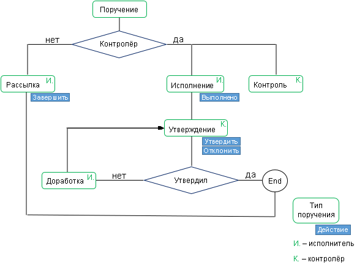

В Riverdoc поручения бывают двух видов: с контролем и без контроля.
Задачи по поручениям без контроля
Задачи по поручениям без контроля называются "Рассылка" и выполняются в рамках процесса "Быстрая отправка".
•Рассылка – задача на исполнение какого-либо поручения без контроля.
Как правило, такое поручение носит информационный характер. Срок исполнения и отчёт о проделанной работе указывать необязательно. Поручение Рассылка считается выполненным после нажатия кнопки Завершить.
Задачи по поручениям с контролем
•Исполнение – поручение, о выполнении которого исполнителю нужно отчитаться, а контролёру проверить и утвердить либо вернуть на доработку. Срок исполнения – обязательный параметр при создании такого поручения.
Перед завершением подконтрольного поручения необходимо заполнить поле Комментарий: написать отчёт о проделанной работе. Далее отправить руководителю (контролёру) на проверку, нажав кнопку На утверждение.
•Утверждение – такая задача приходит контролёру после того, как исполнитель(и) завершил(и) задачу Исполнение. После проверки выполненного поручения контролёру доступны два действия:
oУтвердить – если замечаний нет. В этом случае задача завершается.
oОтклонить – если возникли замечания. В этом случае задача возвращается исполнителю на доработку.
 Примечание. Если при постановке поручения было указано несколько исполнителей, контролёр получит задачу Утверждение от каждого из них.
Примечание. Если при постановке поручения было указано несколько исполнителей, контролёр получит задачу Утверждение от каждого из них.
•Доработка – такая задача приходит исполнителю после того, как контролёр отклонил задачу Утверждение. Необходимо ознакомиться с замечаниями, доработать поручение и отправить На согласование.
•Контроль – такая задача приходит пользователю, которого постановщик поручения указал в поле Контролёр.
Доступные действия:
oСнять с контроля
oОтменить поручение

Контролю дорисовать два действия (отменить поручение, снять с контроля), как прикрутят